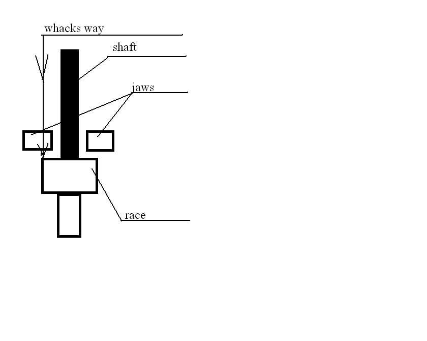

-
How did you guys separate the shaft from the inner race.
Thinking about clamping the shaft in a vice and using a mallet and a chunk of wood and
beating on the housing. I'm reconditioning a set of unicorn SS halfshafts and don't want to break anything.
84 AE/Shiro #683/Shiro #820/84 Turbo -
-
bring it over to my house. I was able to separate both sides simply by trying to get them out of the diff when I did my RCA bushings.
seriously tho, there is a clip at the top that you have to get past and FSM says to just tap it out.
Why do you have to remove it? -
Both inner and outer boots were torn, so i got new boots and want to clean the old contaminated grease out of both sides before reassembly.
The inner race was nearly impossible to remove, but in hindsight i should have let it soak in PB blaster first.
I sorta remembered (and just verified) that the FSM says it was a non-disassembly design, so that means
even if i were to get the shaft out, the carrier and inner race don't come out of the housing.
I thought that if i had the shaft out, i could rotate the race 90deg and pop out the ball bearings then races,
but thinking about it again, that most likely wouldn't work.
I guess flushing it with solvent/cleaner (leaving the shaft in place) to get the grease out is probably the best option.
84 AE/Shiro #683/Shiro #820/84 Turbo -
AXLE.jpg
It is possible to separate it. -
Interesting. Thanks for the picture.
That inner circle clip is what i thought the outer snap ring was in the diagram, as it only shows one..d'oh.
84 AE/Shiro #683/Shiro #820/84 Turbo -
I don't want to damage inner race, so thought there are different options besides "sledge hummer" -
Houston, we have separation:
I brought it into my shop at work and made some aluminum jaw pads for my vice
then just a couple of whacks (letting gravity do it's work) downward on the outer race popped it right out.
No hammering required, no damage to the race(s).
84 AE/Shiro #683/Shiro #820/84 Turbo -
wait, I don't get it.
you holding shaft in jaws, and few whacks to inner race?
 -
Nice! Good work! -
Like dis:Originally posted by midian
84 AE/Shiro #683/Shiro #820/84 Turbo -
I was too lazy that time to draw in cad (or solid) =)Originally posted by Z_Karma -
Heh, i started in paint but haint the new mspaint compared to what last came with XP and
did that with Sketchup, all but the shaft, arrow and text was a premade model i downloaded.
84 AE/Shiro #683/Shiro #820/84 Turbo

Copyright © 2006–. All rights reserved. Privacy Policy